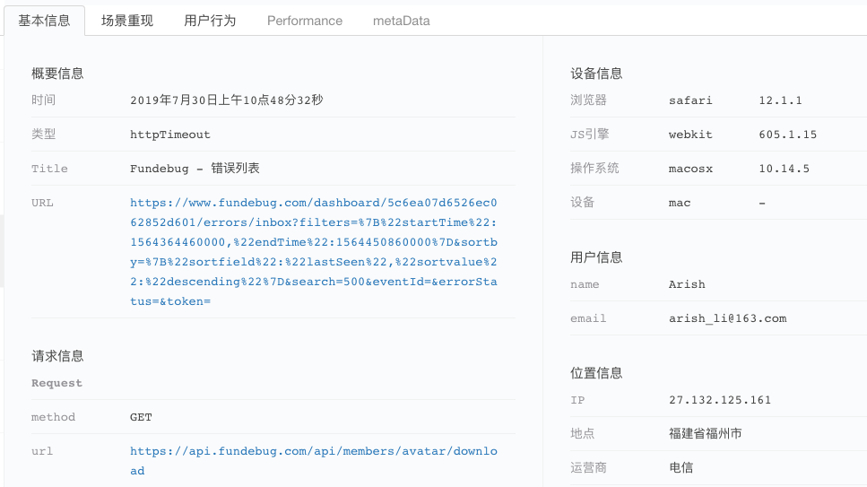
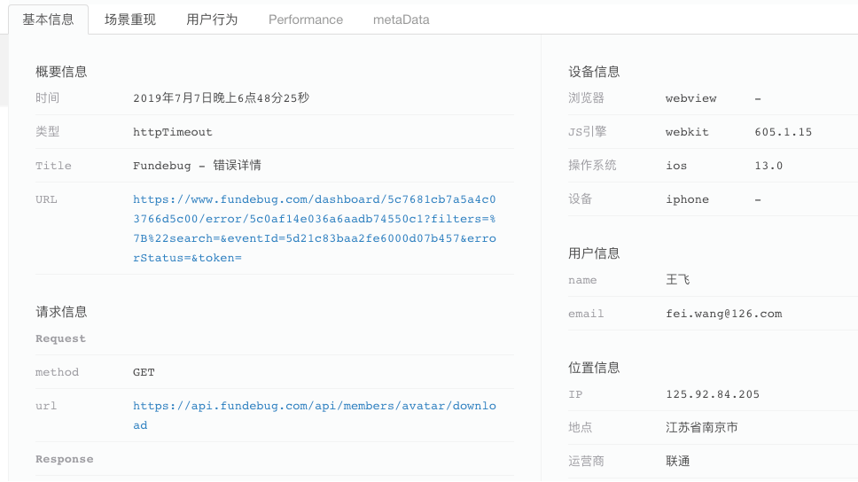

原文连接:https://www.cnblogs.com/fundebug/p/a-few-tips-about-revideo.html
1. "视频"并非真的视频、也不是通过连续播放大量截图来实现
首先请大家观看这个视频：
视频中，当鼠标点击“场景重现”，会立即播放一段“视频”。它完整的记录了用户点餐时候遇到障碍之前的一段操作。这段“视频”看起来和真的视频几乎一样，所以会被误以为是通过录制视频来记录的。实际上，它并非视频。我们在客户端通过记录操作序列(用户行为、DOM变化)，在重放的时候将操作序列再执行一遍，看起来就像视频一样了。当然，涉及到很多复杂的细节，在这里不便赘述。近期，SMARTX公司开源的rrweb也使用了类似的技术。如果感兴趣，可以去了解详细内容。
这样做有几大优点：
可自定义的隐私保护：通过配置
_fun-hide标签，插件会自动将隐私数据抹去。如果是视频，很难做到。"视频”的体积很小：如果是录制视频，使用iPhone X录制一个20s的视频大概是6MB，假设压缩比例为10%，那么依然有620KB。针对大多数的网页，20s的录屏数据可以小至几十KB。当然不排除极个别的情况数据量过大，我们会主动放弃录制。
2. 不仅只支持Chrome
几乎所有高版本的浏览器(IE(>=11)，Chrome(>=26)，Safari(>=7), Firefox(>=14))都是支持的，包括微信内置浏览器(Webview)。比如下面这一条记录，设备信息显示为Safari。“场景重现”的标签是可点击的，证明录屏有数据，可以播放。

另外，微信/钉钉等应用内打开的网页也是可以录制的:

3. 性能充分优化，不会影响用户使用
因为不是真的录制视频，所以并不会占用太多资源。另外，录屏插件的核心算法经过充分的优化，将CPU和内存使用率降到最低。录屏算法的性能本质上和页面发生变化的节点数有关，我们做过这样一个测试：在网页中插入一定数量的DOM节点，并统计接入和不接入录屏插件耗时情况。
| 插入的节点数量 | 不接入录屏(ms) | 平均时间(ms) | 接入录屏(ms) | 平均时间(ms) |
|---|---|---|---|---|
| 10 | 110.0, 152.4, 121.9, 147.4, 133.5, 105.8, 153.3 | 132.04 | 187.1, 131.4, 121.4, 160.3, 139.9, 123.2, 143.3 | 143.8 |
| 50 | 114.7, 92.7,107.2, 114.3, 112.1, 124.5, 119.3 | 112.11 | 126.4, 128.8, 137.5, 143.5, 133.6, 135.1, 133.3 | 134.02 |
| 100 | 125.5, 118.9, 112.5, 115.4, 129.5, 107.9, 113.8 | 117.64 | 152.8, 136.0, 144.4, 146.9, 131.0, 146.0, 148.6 | 143.67 |
| 200 | 164.0, 121.6, 167.7, 122.1, 119.7, 139.4,129.6 | 137.72 | 196.0, 190.7, 201.8, 177.5, 194.9,175.5, 201.0 | 191.06 |
| 500 | 141.5, 197.5, 173.9, 193.7, 193.1, 170.6, 192.3 | 180.37 | 229.2, 274.8, 324.8, 348.0, 368.6, 324.3, 324.1 | 313.4 |
| 1000 | 345.7, 278.0,316.1, 258.1, 285.7, 284.0,331,2 | 299.83 | 468.9, 486.9, 453.0,376.4, 361.8, 462.7, 462.3 | 438.86 |
一般情况下，网页的变动导致DOM的变化节点不会超过100个。在小于100个节点的情况下，接入录屏插件额外增加的时间小于30毫秒。因此，在大多数情况下，录屏插件对性能的影响是可以忽略不计的。
录屏功能介绍
Fundebug提供专业的异常监控服务，当线上应用出现 BUG 的时候，我们可以第一时间报警，帮助开发者及时发现 BUG，提高 Debug 效率。在网页端，我们通过原创的录屏技术，可以 100%还原 BUG 出现之前用户的操作流程，帮助开发者快速复现出错场景。完整演示视频如下：
关于Fundebug
Fundebug专注于JavaScript、微信小程序、微信小游戏、支付宝小程序、React Native、Node.js和Java线上应用实时BUG监控。 自从2016年双十一正式上线，Fundebug累计处理了10亿+错误事件，付费客户有阳光保险、核桃编程、荔枝FM、掌门1对1、微脉、青团社等众多品牌企业。欢迎大家免费试用！

版权声明
转载时请注明作者 Fundebug以及本文地址：
https://blog.fundebug.com/2019/08/02/a-few-tips-about-revideo/